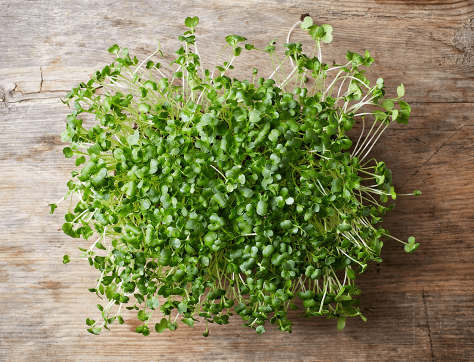

#1 – Sprouting Guide (Quick View)
Sprouts are the beginning life of a plant. These baby plants are loaded with nutrients, minerals, vitamins, antioxidants, proteins, fats, phytochemicals, enzymes, water, and chlorophyll. Sprouts have the highest concentration of these nutrients, vitamins, etc. than any other stage of a plant’s life.

Sprouts ALIVE!
Sprouts are alive and continue to grow for some time after they are harvested. This period of growth continues to add more nutrients. Not only do we sprout nuts and seeds to release their maximum amounts of nutrients, but many people find they cannot tolerate grains, seeds, nuts, and legumes, or products such as breads, cakes, or bean dishes made from them.
Do you suffer from indigestion, flatulence, or bloating after eating them? Seeds and nuts contain not only enzyme inhibitors but also phytic acid, which is found in the outer layer. Both of these make dry grains, seeds, and legumes virtually indigestible. Phytic acid also reacts with many essential minerals, such as calcium, magnesium, copper, iron, and especially zinc, and stops their absorption in your intestines.
As they soak, the enzymes, lactobacilli and other helpful organisms break down and neutralize the phytic acid. As little as seven hours soaking in water removes most of the phytic acid. Soaking, fermenting, and sprouting also breaks down gluten and other difficult-to-digest proteins into simpler components that are more easily absorbed.
Not only are sprouts living food, but they are also naturally low in calories. Their vitamin A content will usually double, various B group vitamins will be five to ten times higher, and vitamin C will increase by a similar order. Their protein content becomes easily digestible, and rich new nutrients such as enzymes and phytochemicals are created. They contain significant amounts of bio-available calcium, iron, and zinc.
One of the easiest and least expensive routes in sprouting is the jar method. When using jars, use wide-mouth, glass canning jars, which are available at many hardware or grocery stores. You will need screen lids – cut pieces of different (plastic) mesh screens or buy some of the special plastic screen lids designed for sprouting. Sprouting in jars is quite straightforward: put the seeds in a jar, add soak water, and fasten the lid. When the soak is over, invert the jar and drain the water, then rinse again. Then prop the jar up at a 45-degree angle for the water to drain. Keep out of direct sunlight. Rinse the seed in the jar two to three times per day until ready, always keeping it angled for drainage.
You can use your sprouted seeds at various growth periods. Often I will sprout the seed or grain only long enough to create a small tale, using them in cookie or bread recipes. Here is an example.
Sprouting Guide
- Select the type of seed or bean from the chart below.
- Place the suggested amount of seeds or beans in the sprouting jar and cover with purified water. Usually, a 1:2 ratio. One part seed, two parts water.
- Soak the seeds or beans for the suggested amount of time.
- Drain the water from the jar after the suggested amount of soaking time.
- Put the jar in a dark place such as a kitchen cupboard.
- Rinse the seeds or beans every four to eight hours.
- After rinsing, replace the jar to the dark cupboard.
- Once sprouting begins, that you see the shoots, put the jar into the sunlight to allow the sprouts to develop chlorophyll.
- Let the sprouts grow for the suggested number of days.
- You can adjust the growing time based on whether you are planning on eating the sprouts or juicing the sprouts. If you want to eat the sprouts, then you can eat them when they are a little smaller. If you’re going to juice the sprouts, then they will need to be a little bigger.
- What are you waiting for? Sprout Living!!
|
Soaking Time |
Sprouting Time |
| All Beans |
9 – 12 hours |
2 – 3 days |
| Alfalfa |
5 – 10 hours |
3 – 5 days |
| Almond |
8 – 10 hours |
2 – 3 days |
| Buckwheat |
1 – 2 hours |
2 – 3 days |
| Clover |
8 – 10 hours |
3 – 4 days |
| Corn |
10 – 15 hours |
3 – 5 days |
| Fenugreek |
10 – 12 hours |
4 – 5 days |
| Lentils |
10 – 12 hours |
2 – 3 days |
| Millet |
8 – 11 hours |
1 – 2 days |
| Oat Groats |
8 – 10 hours |
1 – 2 days |
| Peas |
9 – 12 hours |
2 – 3 days |
| Quinoa |
8 – 10 hours |
2 – 3 days |
| Rice |
9 – 12 hours |
3 – 4 days |
| Rye |
9 – 12 hours |
2 – 4 days |
| Sesame Seeds |
8 – 11 hours |
3 – 4 days |
| Spelt |
6 – 12 hours |
3 – 4 days |
| Sunflower Seeds |
6 – 8 hours |
2 – 3 days |
| Triticale |
9 – 12 hours |
2 – 4 days |
| Wheatgrass |
10 – 12 hours |
7 – 10 days |
Sprouting chart brought to you by http://www.juicingbook.com/sprouts
© AmieSue.com